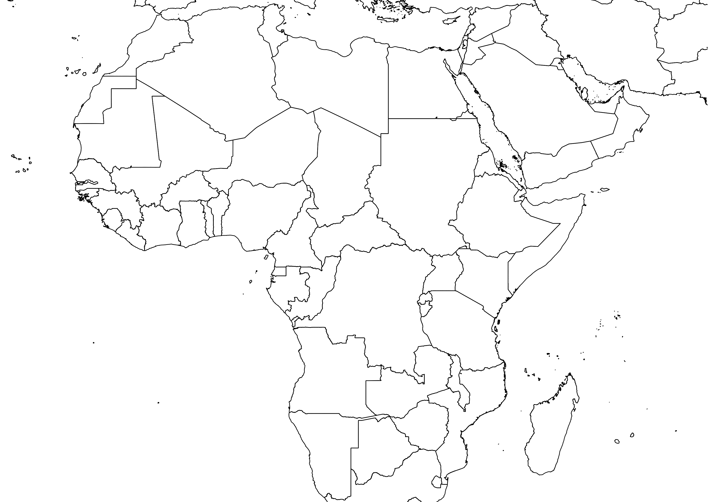
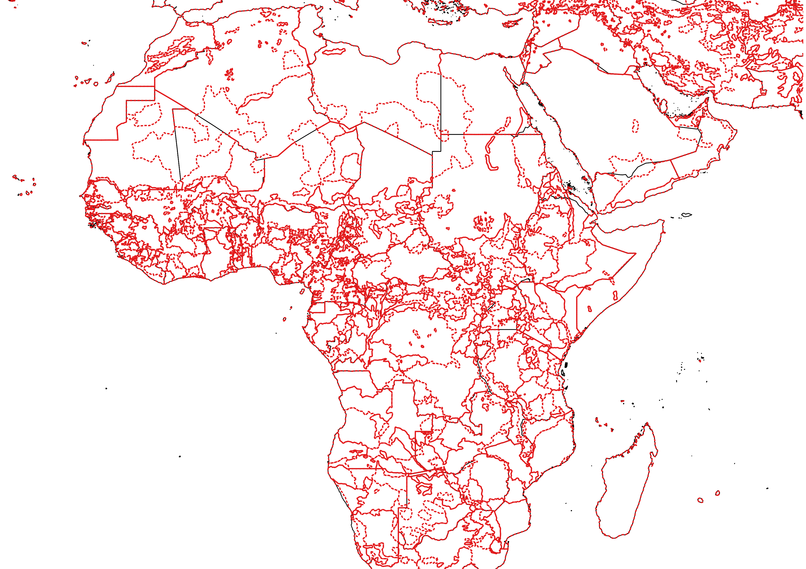
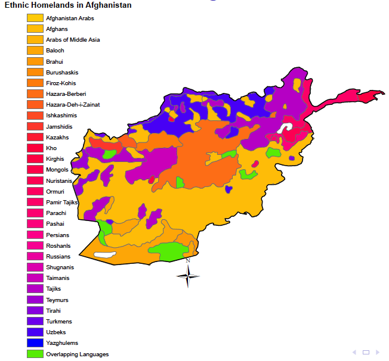
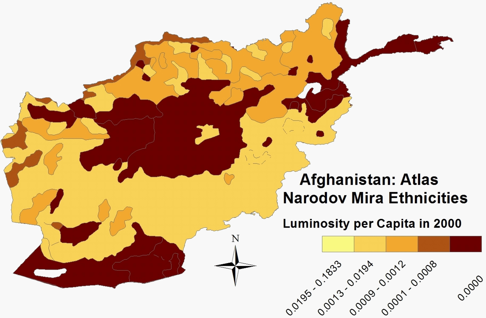
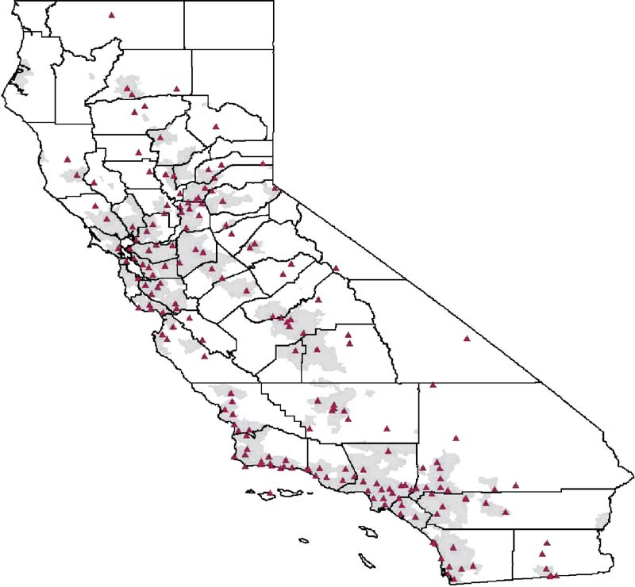
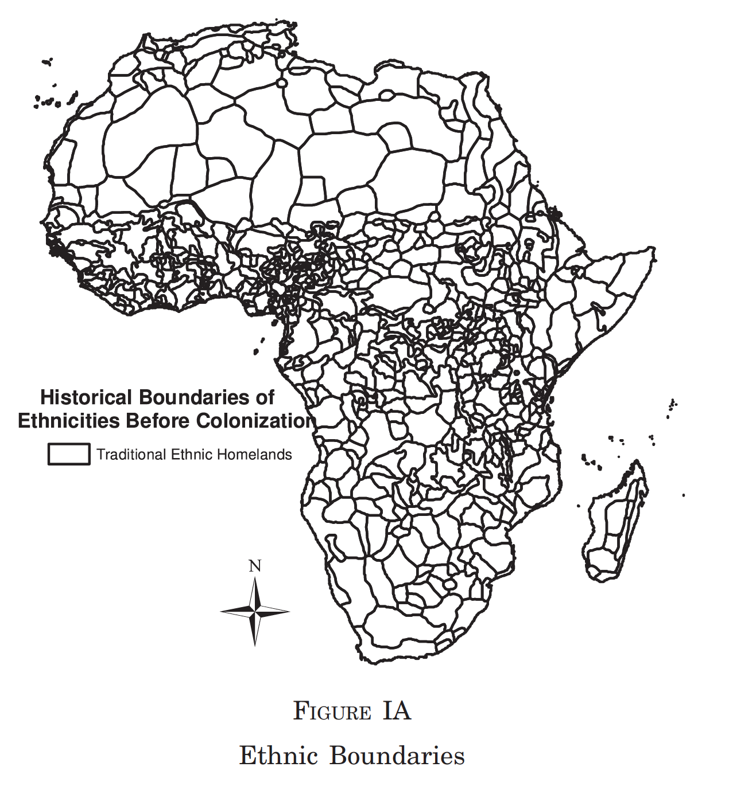
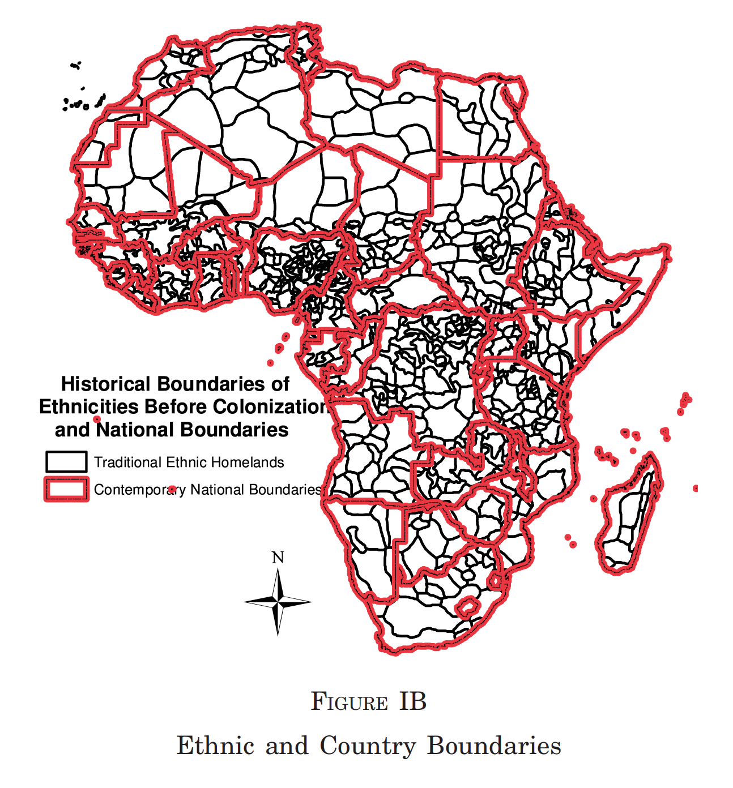
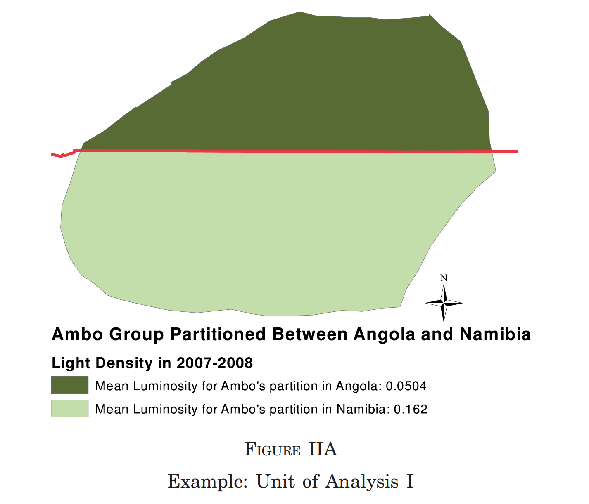
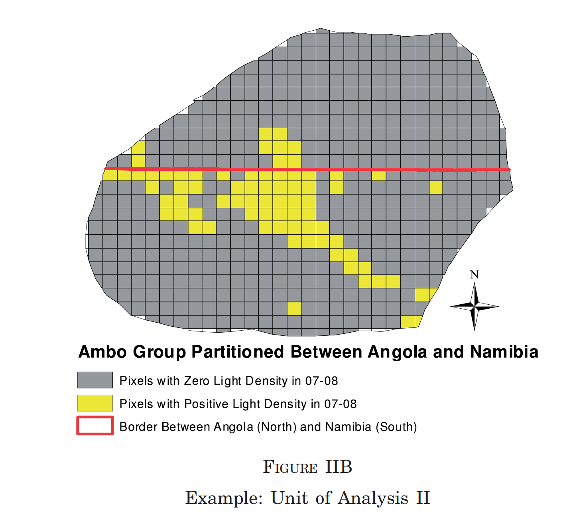
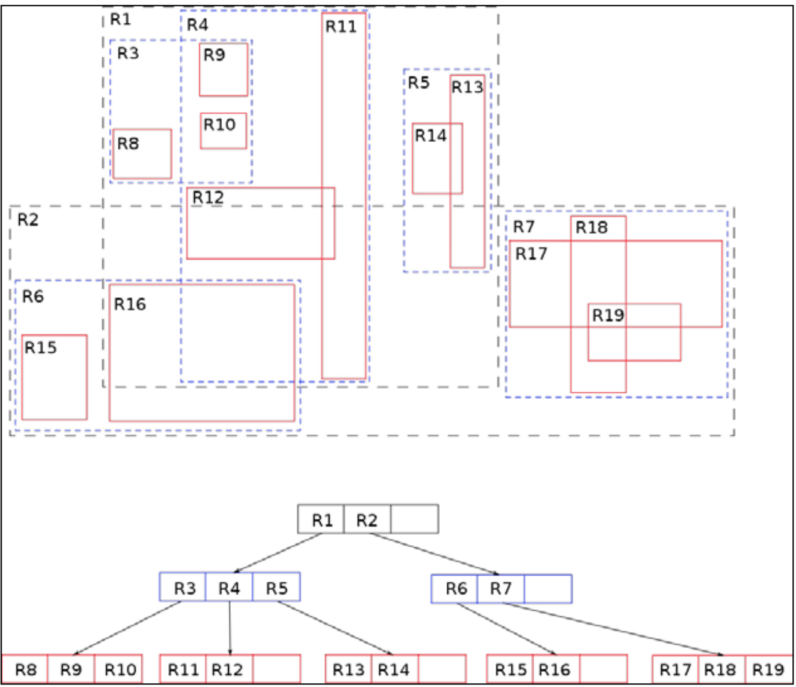

<!doctype html>
<html lang="en">

<head>
	<meta charset="utf-8">

	<!-- Titles and author for Metadata -->
	<title>GIS for Applied Economics</title>
	<meta name="description" content="GIS for Applied Economics">
	<meta name="author" content="Juan Carlos Muñoz-Mora">

	<!-- Options for screen -->
	<meta name="apple-mobile-web-app-capable" content="yes" />
	<meta name="apple-mobile-web-app-status-bar-style" content="black-translucent" />
	<meta name="viewport" content="width=device-width, initial-scale=1.0, maximum-scale=1.0, user-scalable=no, minimal-ui">

	<!-- Templates -->
	<link rel="stylesheet" href="reveal.js/css/reveal.css">
	<link rel="stylesheet" href="reveal.js/css/theme/white.css" id="theme">
	<link rel="stylesheet" href="reveal.js-own-style/print.css"  type="text/css" media="print">

	<!-- Code syntax highlighting -->
	<link rel="stylesheet" href="reveal.js/lib/css/zenburn.css">
	<!--[if lt IE 9]>
	<script src="reveal.js/lib/js/html5shiv.js"></script>
	<![endif]-->
	<script async defer src="https://buttons.github.io/buttons.js"></script>
	</head>

	<!-- ...  ...  ...  ... ... ... ... ... .. .. ..-->
	<!-- ...  ...  ...  ... ... ... ... ... .. .. ..-->
	<!-- 				Content 					-->
	<!-- ...  ...  ...  ... ... ... ... ... .. .. ..-->
	<!-- ...  ...  ...  ... ... ... ... ... .. .. ..-->

	<body>
		<div class="reveal">
			<div class="slides">
			<!-- START SLIDES -->
			<!-- ...  ...  ...  ... ... ... ... ... .. .. ..-->
			<!-- 				Slide 1	 -- Title			-->
			<!-- ...  ...  ...  ... ... ... ... ... .. .. ..-->

<!-- Section 1: General Introduction  -->
<section data-markdown  data-separator="^\n===\n" data-separator-vertical="^\n---\n" >
<script type="text/template">

# GIS for Applied Economics #
<br>

Visualization tools and Vector Transformation (II)
<br>


Juan Carlos Muñoz-Mora <br>
Univeristat Pompeu Fabra
<br>
[juancarlos.munoz@upf.edu](mailto:juancarlos.munoz@upf.edu)
<br> 
Nov 2016


===

# Roadmap #

1. Concepts in Vector Transformation (II)
	- Distances
	- Buffer
3. Some examples in Economics
4. Replication Dell()

===

## Visualization and GIS ##

 <!-- .element class="fragment" data-fragment-index="1" -->
 
<small>Charles Joseph Minard (1869) </small>  <!-- .element class="fragment" data-fragment-index="1" -->

---

#### Types of Maps


<small>Source: [California Geographic Alliance,2010](http://humboldt.edu/cga/atlas-sources-credits) </small>

---


<small>Source: [California Geographic Alliance,2010](http://humboldt.edu/cga/atlas-sources-credits) </small>

---

## Desktop Solution in QGIS


---

## Desktop Solution in QGIS


---

## PyQGIS approach (Render)

<pre><code data-trim data-noesc>
mapRenderer = iface.mapCanvas().mapRenderer()
c = QgsComposition(mapRenderer)
c.setPlotStyle(QgsComposition.Print)
</code> </pre>

[See more](http://docs.qgis.org/2.14/en/docs/pyqgis_developer_cookbook/composer.html#output-using-map-composer)

---

## Visualization tools in R

- [ggplot2](https://journal.r-project.org/archive/2013-1/kahle-wickham.pdf)
- rgdal
- rgeos
- maptools
- Shiny and Rcharts <!-- .element class="fragment grow" data-fragment-index="1" -->

---

<pre><code data-trim data-noesc>
library(maptools)
library(RColorBrewer)

## set the working directory.
setwd("../Session_2/Polygons/")

## load the shapefile
africa<- readShapePoly("Africa_dvp_level0.shp") 

#select color palette and the number colors (levels of income) to represent on the map
colors <- brewer.pal(6, "YlOrRd") #set breaks for the 6 colors 
plot(zip, col=colors[(africa$REGION)], axes=F)

#add a title
title(paste ("Africa Regions"))

#add a legend
legend(x=6298809, y=2350000, legend=leglabs(round(brks)), fill=colors, bty="n",x.intersp = .5, y.intersp = .5)
</code> </pre>

---


---

## Python

- geopandas
- basemap


---

<pre><code data-trim data-noesc>

import geopandas as gp
import matplotlib.pyplot as plt

# Open file
data_folder=
shp_file="/Users/juancarlosmunoz/Dropbox/Documents/Teaching/00_GIS_Applied_Economics/"
africa = gp.GeoDataFrame.from_file(shp_file+"data_and_syntaxis/Session_2/Polygons/Africa_dvp_level0.shp")

## Make the map
fig     = plt.figure()
africa.plot(column='REGION', colormap='OrRd')
plt.show()
</code></pre>

---


---

## Javascript and Python
- Plot.ly
- Tableau
- D3.js
- Charts.js

---

<iframe width="100%" height="700" src="http://kyrandale.com/static/talks/reveal.js/demos/nobel_viz/index.html" frameborder="0" allowfullscreen></iframe>

---

### Nice references in data visualization

- [Tufte, T. (2001). The Visual Display of Quantitative Information](https://www.edwardtufte.com/tufte/books_vdqi) - General
- [Data visualization with python & JavaScript -  Kyral Dale (2016)](https://www.amazon.com/Data-Visualization-Python-JavaScript-Transform/dp/1491920513)

===

# Concepts in Vector Transformation (I) #

- Intersection
- Union
- Dissolve 
- Spatial Join

---

## An important concept


---

## Intersection

 | 

---

- Polygon + Line = ?
- Polygon + Point = ?
- Point + Line = ?

---

## Union


---

## Dissolve


---

## Spatial Join (points in polygon)


===

# Vector Transformation in Action

---

## [Ethnic Inequality](http://www.journals.uchicago.edu/doi/10.1086/685300)

Alberto Alesina, Stelios Michalopoulos, and Elias Papaioannou. 

Journal of Political Economy (2016) 124:2, 428-488 


Document and explore the correlates of ethnic inequality

---
### Africa



---
### Africa + GREG Homeland



---
### Example for Afghanistan

<table>
<td>

</td>
<td>

</td>
</table>

---
### Gini index


---
### Main results


---

## [Air Pollution and Infant Health: What Can We Learn from California's Recent Experience?](http://qje.oxfordjournals.org/content/120/3/1003.short)

Janet Currie and Matthew Neidell. The Quarterly Journal of Economics (2005) 120 (3): 1003-1030.


---

This paper examines the impact of air pollution on infant death in California over the 1990s.

- Infant mortality: individual-level with zip-code of mothers' residency
- Air pollution: monitor-level (geo-referenced)
- Monitor locations & zip-code polygons 

### Main findings

They find that reductions in carbon monoxide over the 1990s saved approximately 1000 infant lives in California.

---

### Ozone monitors in California. 

<small>Source: Neidell, 2004</small>

===

#[National Institutions and Subnational Development in Africa](http://qje.oxfordjournals.org/content/129/1/151.full)   

Michalopoulos and Papaioannow. The Quarterly Journal of Economics (2014) 129 (1): 151-213.

---

## Paper 

They investigate the role of national institutions on subnational African
development in a novel framework that accounts for both local geography and
cultural-genetic traits.

- political boundaries $\rightarrow$ partitioned more than 200 ethnic groups 

### Method

- Matching type
- Spatial Regression Discontinuity approach (pixel level)

---

### Berlin Conference: Partitioned Africa Among Colonizers


---

  

---

  

---

## Defining partitioned

- At least 10% of the historical homeland belongs to more than one contemporary
state. 
- They drop partitioned areas of less than 100 square kilometers as tiny partitions are most likely due to the lack of precision and projection error.

---


---


Similar at pixel level

$IQLc$ denotes institutional quality of country c (World Bank's Governance Indicators)

---


$\uparrow$ higher institutional $\rightarrow$ $\uparrow$ higher levels of development

---

- Regression Discontinuity Design (RD-polynomials of the distance from
the centroid of each pixel) - Discussed on Thursday 
-  Other analysis - Robustness Check

===

## Replicate to the baseline results...

Law for coding: "the nose rule"

## Keep it simply!

---

## PyQGIS

- Python library with a pre-defined 
- [Nice manual](http://docs.qgis.org/2.14/en/docs/index.html)
- Two ways to use it
	- Within QGIS (using active layers)
	- Using external compilers

---


---

## Basic Use (within QGIS) - Starting

<pre><code data-trim data-noescape>
# Loading all libraries
from qgis.core import *
import qgis.utils
from qgis import *
from qgis.analysis import * 
import PyQt4
from PyQt4 import QtCore, QtGui

</code></pre>

---

## Basic Use (within QGIS)

<pre><code data-trim data-noescape>

# We use the active layer
layer=qgis.utils.iface.activeLayer()

# Get all layer actives
mapcanvas = iface.mapCanvas()
layers_3 = mapcanvas.layers()
print layers[0].name()

# Another option is open a layer 
layer2 = iface.addVectorLayer("shp/path", "test", "ogr")

# Check the Name
layer.id()
</code></pre>

---

## Basic Use (within QGIS) (cont...)

<pre><code data-trim data-noescape>
# Check the columns within the feature
iter = layer.getFeatures()
for feature in iter:

    # retrieve every feature with its geometry and attributes
    # fetch geometry
    geom = feature.geometry()
    print "Feature ID %d: " % feature.id()

    # Get Attributes
    attrs = feature.attributes()

    # Print Attributes
    print attrs

</code></pre>

---

## Intersection 


<pre><code data-trim data-noescape>
src_shpA = "shapefile/path/1"
src_shpB = "shapefile/path/1"
dst_shp  = "shapefile/path/1"
shpA = QgsVectorLayer( src_shpA  , "layerA", "ogr")
shpB = QgsVectorLayer( src_shpB  , "layerB", "ogr")
# Prepare processing framework 

QgsOverlayAnalyzer().intersection( shpA , shpB  , dst_shp )

</code></pre>

---

## Standalone QGIS Initilization Script for QGis running on Mac OS X

<pre><code data-trim data-noescape>
import os
import sys

#Implicitly define where plugins are for QGIS
sys.path.append('/Applications/QGIS.app/Contents/Resources/python/')
sys.path.append('/Applications/QGIS.app/Contents/Resources/python/plugins')

# Here you work as you were within QGIS

</code></pre>

---

## Standalone Solution

- Two libraries 
	- [Fiona (based on OGR)](https://pypi.python.org/pypi/Fiona/)
	- [Rtree](http://toblerity.org/rtree/)
	- [Shapely](http://toblerity.org/shapely/manual.html)

---

## Loading Packages for replication (within QGIS) (cont...)

<pre><code data-trim data-noescape>
from shapely.geometry import shape, mapping
import os,sys
import fiona
import rtree 
from fiona.crs import from_epsg
</code></pre>

---

Spatial Tree (Rtree)



---

<pre><code data-trim data-noescape>
## Declare the working folders
with fiona.open(murdock, 'r') as murdock_shp:
    with fiona.open(africa_level1, 'r') as africa:

        ### Define the schema for the final output
        schema = {'geometry':'Polygon','properties': {'murdock_group': 'str','partition': 'int:10','area': 'float'}}
        with fiona.open(output, 'w', 'ESRI Shapefile', schema,crs=from_epsg(4326)) as output:

            ### Build Spatial Index
            index = rtree.index.Index()
            print "Creating the Spatial index - coastline"
            for feat1 in africa:
                fid = int(feat1['id'])
                geom1 = shape(feat1['geometry'])
                index.insert(fid, geom1.bounds)

            ## Iterate over Murdock features
            for feat in murdock_shp:
              geom = shape(feat['geometry'])
              area_orig= geom.area

              ## Now, we check whether it intersects
              for fid in list(index.intersection(geom.bounds)):
                feat2=africa[fid]
                geom3 = shape(feat2['geometry'])
                area_int= geom3.area
                ## 
                number_part=0
                if geom.intersects(geom3):
                    per=area_int/area_orig
                    if per>0.1 and per<1:
                        prop={'murdock_group': feat['properties']['NAME'],'partition': 1,'area': area_int}
                        output.write({
                                    'properties': prop,
                                    'geometry': mapping(geom.intersection(geom3))
                                })
                    else:
                        pass

</code></pre>


===

Let's replicate!

---
- Coordinate system?
- 


</script>
</section>


<!-- END SLIDES -->
		</div>
	</div>

<!-- ...  ...  ...  ... ... ... ... ... .. .. ..-->
<!-- ...  ...  ...  ... ... ... ... ... .. .. ..-->
<!-- 				Scripts Options				-->
<!-- ...  ...  ...  ... ... ... ... ... .. .. ..-->
<!-- ...  ...  ...  ... ... ... ... ... .. .. ..-->


	<!-- Basic Scripts Set Up -->
	<script src="reveal.js/lib/js/head.min.js"></script>
	<script src="reveal.js/js/reveal.js"></script>

	<!-- Basic Scripts Set Up -->
	<script>
			// Full list of configuration options available here:
			// https://github.com/hakimel/reveal.js#configuration
			Reveal.initialize({
				// Display controls in the bottom right corner
				controls: true,
				// Display a presentation progress bar
				progress: true,
				// Push each slide change to the browser history
				history: true,
				center: true,
				mouseWheel: true,
				theme: Reveal.getQueryHash().theme, // available themes are in /css/theme
				transition: Reveal.getQueryHash().transition || 'default', // none/fade/slide/convex/concave/zoom
				math: {
			        mathjax: 'https://cdn.mathjax.org/mathjax/latest/MathJax.js',
			        config: 'TeX-AMS_HTML-full'  // See http://docs.mathjax.org/en/latest/config-files.html
			    },
			    //  Add annotation into the board
			    chalkboard: { // font-awesome.min.css must be available
					src: "chalkboard/chalkboard.json",
					toggleChalkboardButton: { left: "80px" },
					toggleNotesButton: { left: "130px" },
    			},
    			menu: { // Menu works best with font-awesome installed: sudo apt-get install fonts-font-awesome
					themes: false,
					transitions: false,
					markers: true,
					hideMissingTitles: true,
					custom: [
				            { title: 'Plugins', icon: '<i class="fa fa-external-link"></i>', src: 'toc.html' },
				            { title: 'About', icon: '<i class="fa fa-info"></i>', src: 'about.html' }
				        ]
				},
				anything: [ 
					{className: "anything",  initialize: (function(container, options){ if (options && options.initialize) { options.initialize(container)} }) }
				],
				menu: { // Menu works best with font-awesome installed: sudo apt-get install fonts-font-awesome
					themes: false,
					transitions: false,
					markers: true,
					hideMissingTitles: true,
					custom: [
				            { title: 'Plugins', icon: '<i class="fa fa-external-link"></i>', src: 'toc.html' },
				            { title: 'About', icon: '<i class="fa fa-info"></i>', src: 'about.html' }
				        ]
				},
				theme: Reveal.getQueryHash().theme, // available themes are in /css/theme
				transition: Reveal.getQueryHash().transition || 'default', // none/fade/slide/convex/concave/zoom

				// Optional libraries used to extend on reveal.js
				dependencies: [
					{ src: 'reveal.js/lib/js/classList.js', condition: function() { return !document.body.classList; } },
					// For Markdown Codes
					{ src: 'reveal.js/plugin/markdown/marked.js', condition: function() { return !!document.querySelector( '[data-markdown]' ); } },
					{ src: 'reveal.js/plugin/markdown/markdown.js', condition: function() { return !!document.querySelector( '[data-markdown]' ); } },

					{ src: 'reveal.js/plugin/highlight/highlight.js', async: true, callback: function() { hljs.initHighlightingOnLoad(); } },
					{ src: 'reveal.js/plugin/math/math.js', async: true },
					{ src: 'reveal.js/plugin/zoom-js/zoom.js', async: true, condition: function() { return !!document.body.classList; } },
					{ src: 'reveal.js/plugin/notes/notes.js', async: true, condition: function() { return !!document.body.classList; } },
					{ src: 'reveal.js-plugins/anything/d3/d3.v3.min.js' },

					{ src: 'reveal.js-plugins/anything/d3/d3.geo.projection.v0.min.js' },

					{ src: 'reveal.js-plugins/anything/d3.patch.js' },

					{ src: 'reveal.js-plugins/anything/d3/queue.v1.min.js' },

					{ src: 'reveal.js-plugins/anything/d3/topojson.v1.min.js' },

					{ src: 'reveal.js-plugins/anything/anything.js' },				
					{ src: 'reveal.js-plugins/menu/menu.js' },
					{ src: 'reveal.js-plugins/chalkboard/chalkboard.js' },
				],
				keyboard: {
			        67: function() { RevealChalkboard.toggleNotesCanvas() },    // toggle notes canvas when 'c' is pressed
			        66: function() { RevealChalkboard.toggleChalkboard() }, // toggle chalkboard when 'b' is pressed
			        46: function() { RevealChalkboard.clear() },    // clear chalkboard when 'DEL' is pressed
			         8: function() { RevealChalkboard.reset() },    // reset chalkboard data on current slide when 'BACKSPACE' is pressed
			        68: function() { RevealChalkboard.download() }, // downlad recorded chalkboard drawing when 'd' is pressed
    			
    			},

			});
	</script>

</body>
</html>
